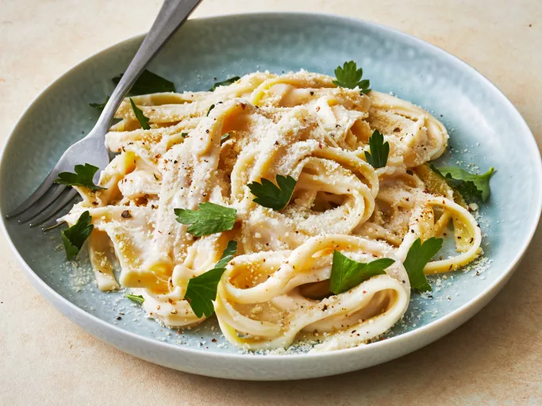

Pasta Alfredo

I experimented with Alfredo sauce until I found a quick, cheap, and easy Alfredo sauce combination — the secret ingredient is cream cheese!
- ½ cup butter
- ⅛ teaspoon ground black pepper
- 1 (8 ounce) package cream cheese
- 2 teaspoons garlic powder
- 2 cups milk
- 6 ounces grated Parmesan cheese
- gather all the ingredients of the list
- Melt butter in a medium, nonstick saucepan over medium heat. Add cream cheese and garlic powder, stirring with a wire whisk until smooth. Add milk, a little at a time, whisking to smooth out lumps. Stir in Parmesan cheese and pepper.
- Remove from heat when sauce reaches desired consistency. Sauce will thicken rapidly. Thin with milk if cooked too long.
- Toss with hot pasta to serve.
Home